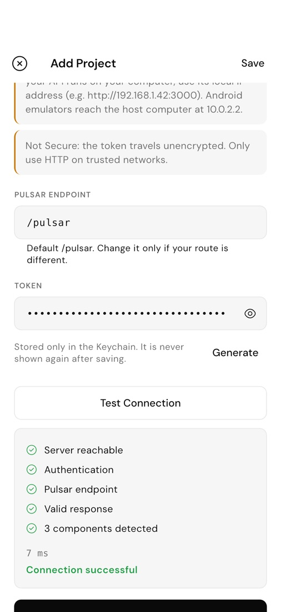
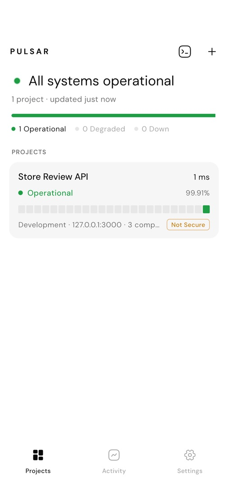

1 / 3
Add GET /pulsar
One route checks your database, cache, workers and providers, and returns a tiny JSON. Guides for 12 frameworks — or write it by hand in any language.
app.get("/pulsar", async (req, res) => {
if (!authorized(req)) return res.sendStatus(401);
res.set("Cache-Control", "no-store").json({
status: "operational",
components: [{ name: "PostgreSQL",
state: await checkDatabase(), uptime30d: 0.9999 }],
checkedAt: new Date().toISOString(),
});
});2 / 3
Protect it with one token
A long random PULSAR_TOKEN lives in your server environment and travels only in the Authorization header. Wrong token, no checks, 401.
PULSAR_ENABLED=true PULSAR_TOKEN=<openssl rand -hex 32>

3 / 3
Add the project in Pulsar
Paste the URL and the token. Test Connection checks reachability, authentication, the endpoint and the response — and tells you exactly what to fix.
